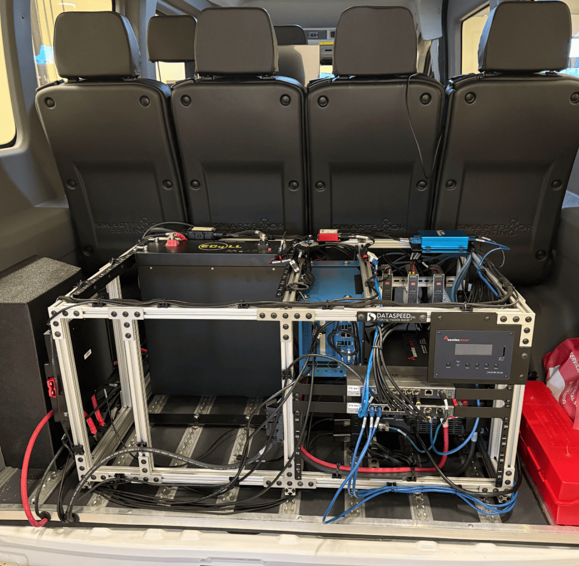
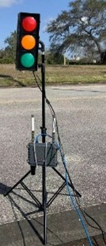
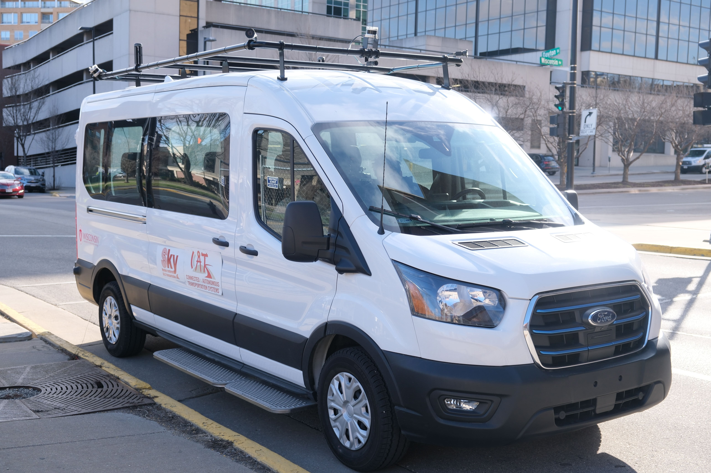
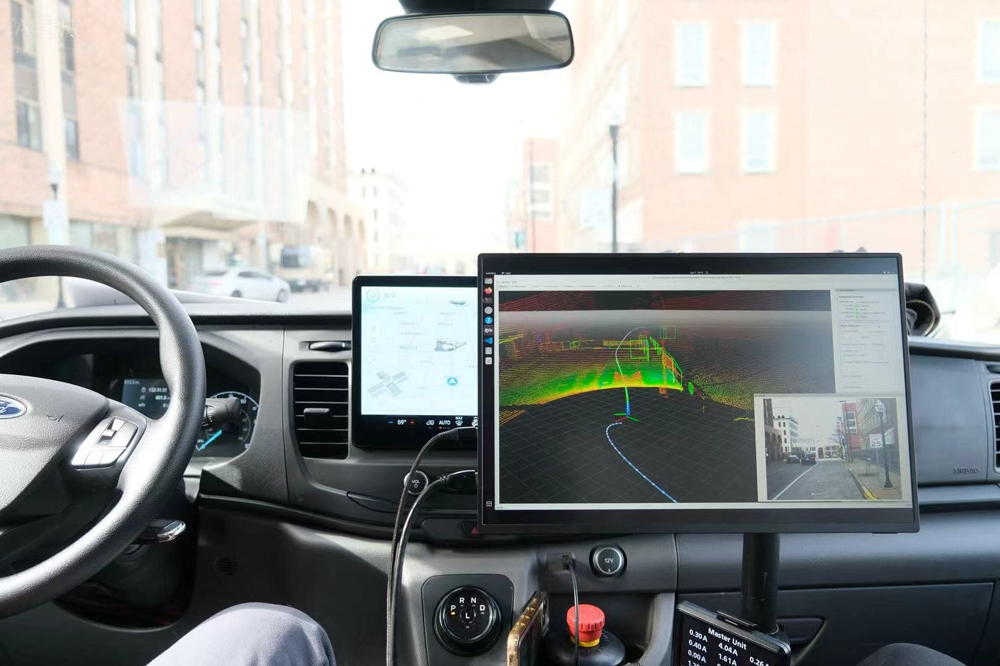
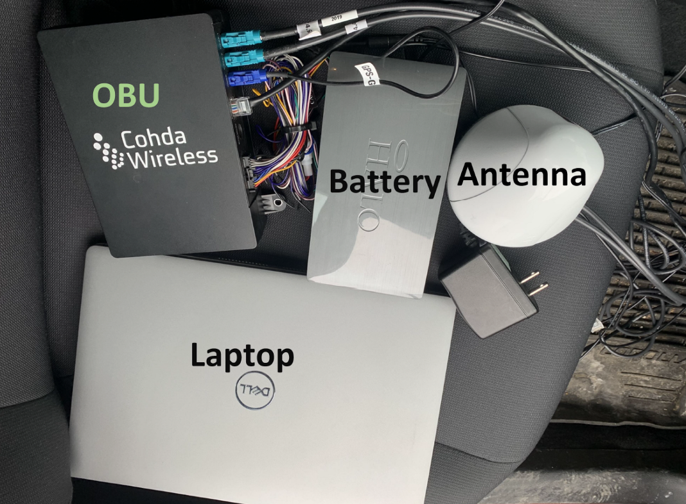

1. Simulation Platform & Dataset
1.1 Sky-Drive: Multi-Agent Interaction
Existing simulators often optimize traffic flow or validate a single vehicle, but lack distributed, multi-agent support. To address this gap, my colleagues and I at Sky-Lab developed Sky-Drive—a long-term effort with many contributors; I have been involved since Summer 2023. Sky-Drive integrates Unreal Engine/CARLA, ROS, WebSocket, and custom scenario pipelines to run synchronized simulations across multiple terminals. Unlike single-vehicle or flow-only tools, Sky-Drive emphasizes synchronized interactions among pedestrians, human-driven vehicles (HVs), and autonomous vehicles (AVs), and supports multi-participant intervention and co-study for human-AI collaborative driving research.
Sky-Drive overview.
My colleagues and I at Sky-Lab are conducting the multi-agent VR experiment.
Safety-Critical Scenario: Right Turn Conflict.
Safety-Critical Scenario: Nearside Conflict.
Safety-Critical Scenario: Left Turn Conflict.
Safety-Critical Scenario: Farside Conflict.
2. Human-centered AI Algorithm
2.1 Imitation Learning Pretraining
2.2 Closed-loop Post-Training: VLM, RL and WM
2.3 Human-in-the-loop Adaptation
3. Real-world Testing & Evaluation
3.1 Real-World Autonomous Driving Testbed
While simulation is safe and scalable, the sim-to-real gap remains a core challenge. At Sky-Lab, we maintain a real-world testbed that I actively use with my colleagues to validate human-centered AI algorithms. Our primary platform is a retrofit electric Ford E-Transit with a full autonomy stack: drive-by-wire, a multi-modal sensor suite (3 LiDARs, 7 cameras, radar), 5G connectivity (NETGEAR Nighthawk M6 Pro), and on-board GPU computing (RTX A6000). We also deploy portable RSUs/OBUs (e.g., Siemens RSUs, Cohda MK6C) and configurable traffic signals to create intersection and corridor scenarios. Combined with Sky-Lab’s Lambda servers (RTX Pro 6000, A6000, 4090, 4080), this cyber-physical setup lets me run end-to-end evaluations, collect edge cases, and iterate quickly on model design and safety checks in real traffic conditions.

Autonomous Van with Sensor Suite

Driver Cockpit and Control Interface

Computing Hardware

Portable Traffic Light

Testbed

Sensor Configuration

V2X Experiment Equipment

5G mmWave Mobile Hotspot
3.2 End-to-End Autonomous Driving
To evaluate designed end-to-end (E2E) driving policies in the real world, my colleagues and I at Sky-Lab deploy them on our lab-developed autonomous van for systematic testing and iterative refinement. Real-time streams from the multimodal perception suite (LiDAR, cameras, radar) feed the E2E policy, which outputs steering, throttle, and brake commands at ~20 Hz for closed-loop control. Through extensive testing on public roads and our campus testbed, we continuously log performance and edge cases to inform model improvements.
End-to-end autonomous driving in urban and rural environments (McKee Road, Madison).
Live demo at 2025 AAA Safe Mobility Conference, Madison, WI.
3.3 Remote Vehicle Operations and Cloud-Based AI Deployment
Deploying large VLMs and complex AI stacks directly on vehicle hardware is often compute-limited. To overcome this, my colleagues and I at Sky-Lab built a remote operations (teleoperation) and remote-inference platform for our autonomous van. Using 5G connectivity, we can control the vehicle in real time for driving, operations, and data collection from anywhere (e.g., a conference room or off-site lab). More importantly, the platform supports remote AI deployment: real-time sensor streams are sent from the van to a local workstation or cloud (e.g., AWS), where models process the data and return control commands for immediate execution.
My colleagues and I testing remote driving function with Logitech G920 Racing Wheel and Pedals. Full video on YouTube.
Prof. Chen remote driving from the office.